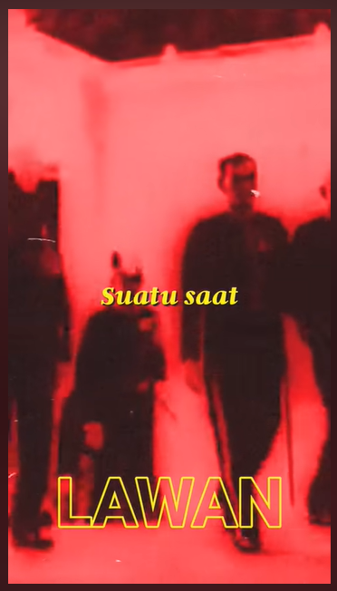

Musik
Musik juga salah satu penikmat musik meski bukan bagian orang yang suka bermain dengannya. Banyak hal yang bisa didapat dengan mendengar musik, contohnya merubah mood menjadi positif dan juga menambah hormon dopamin
Toe Band
Band math-rock asal jepang ini sangat menggugah rasa ingin menari bebas di atas awan
Ketika menulis lagu ini penulis pun sedang mendengarkan lagu Goodbye/グッドバイ

Feast.
Jika anda tau lagu yang dinyanyikan oleh mahasiswa tahun 2019 yang berlirik "Karena peradaban takkan pernah mati". Maka lagu tersebut berasal dari feast dan penulis sangat memberikan 10 jempol jari jika bisa karena saking sukanya lagu tsb
